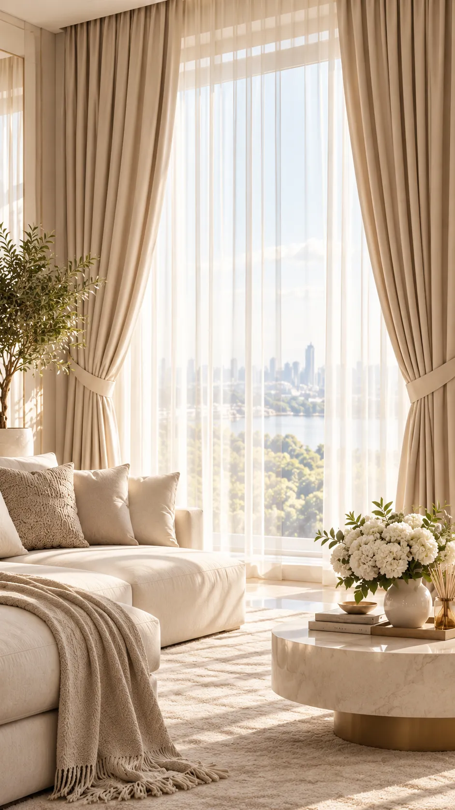
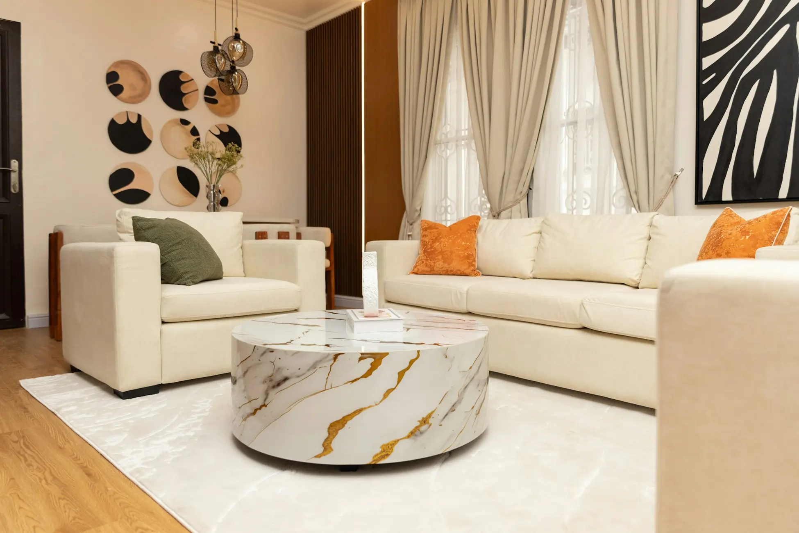
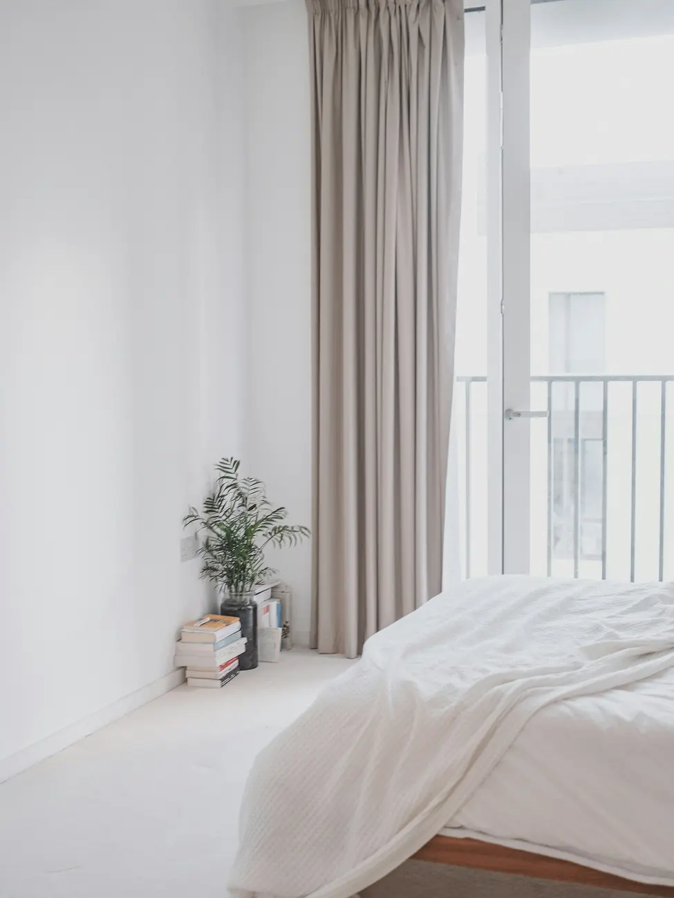
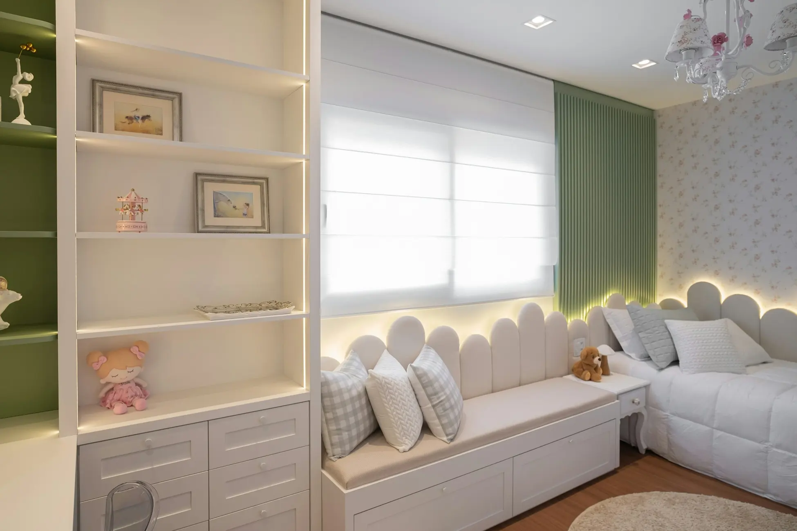
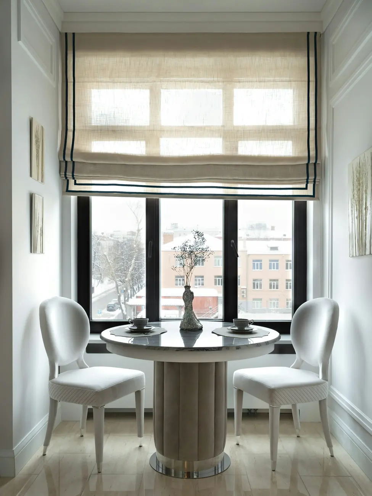
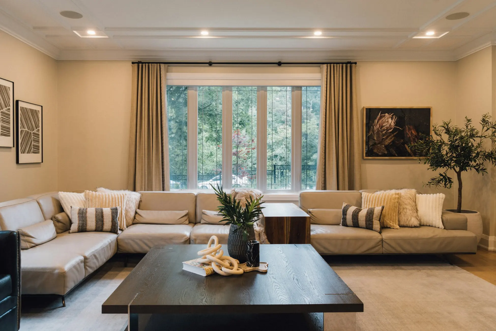
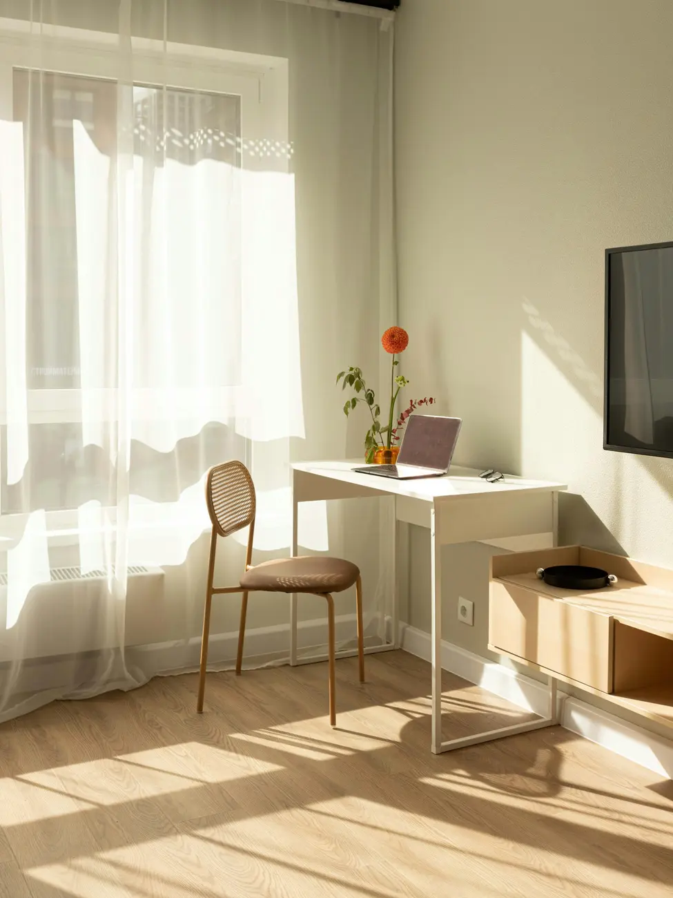
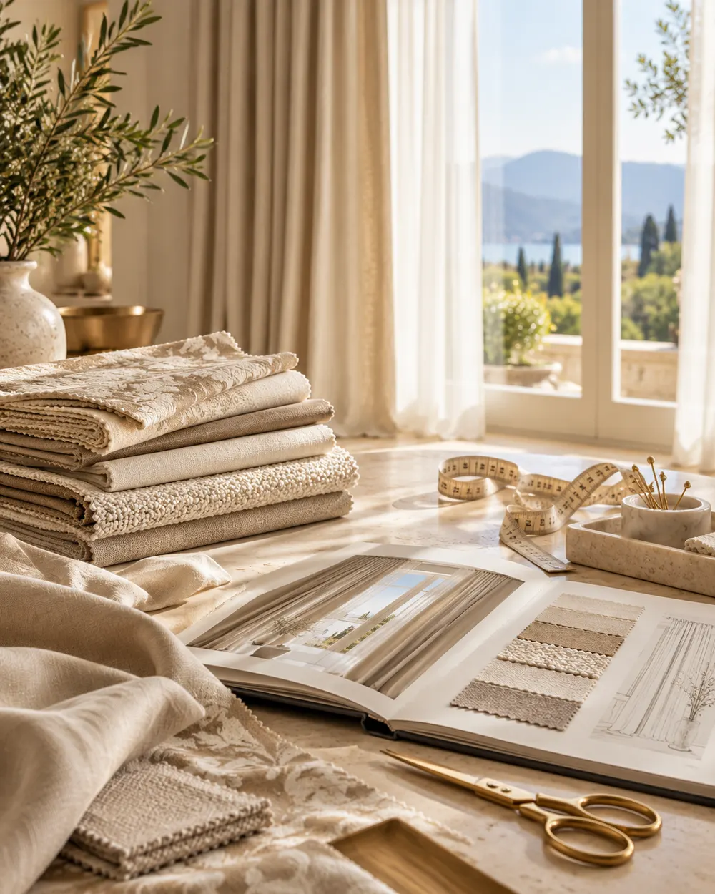
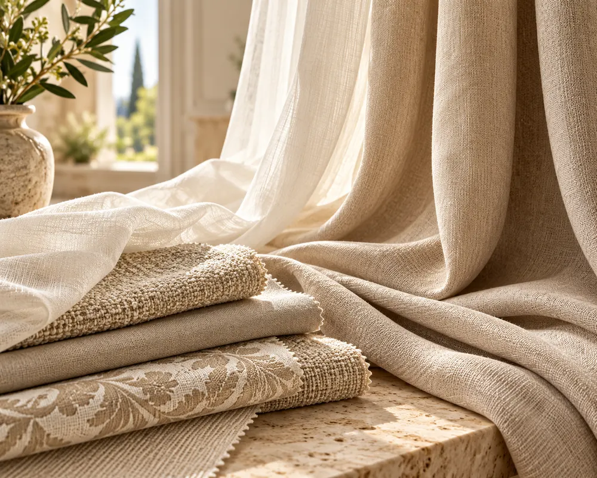

Пошив штор на заказ в Москве и области
Шторы по размерам вашего окна: от выбора ткани до готового изделия.
Москва и область · +7 (000) 000-00-00

Виды штор
Основные виды штор. Ткань, размер и фасон уточняются при замере.
Примеры оформления окон
Шторы для разных комнат: гостиная, спальня, детская, кухня-столовая и кабинет.
Фотографии из открытого фотобанка Unsplash. Это не выполненные работы.







Этапы работы
Сроки, замер и монтаж согласуются при заявке.
-
Заявка
Вы оставляете заявку на сайте и рассказываете, какое окно нужно оформить.
-
Замер и выбор ткани
Уточняем размеры окна, подбираем ткань и фасон, согласуем стоимость до начала работы.
-
Пошив
Шторы шьются по согласованным размерам и выбранному фасону.
-
Готовые шторы
Вы получаете готовое изделие и проверяете его на своём окне.
Оставьте заявку на пошив штор
Напишите, какое окно нужно оформить. Если размеров пока нет, достаточно имени и телефона.
Телефон: +7 (000) 000-00-00 (условный номер для примера).
